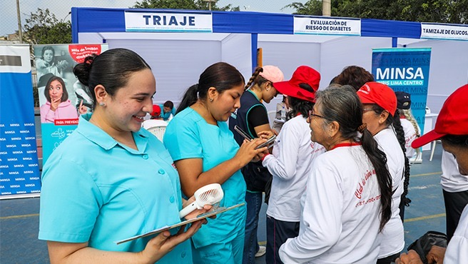
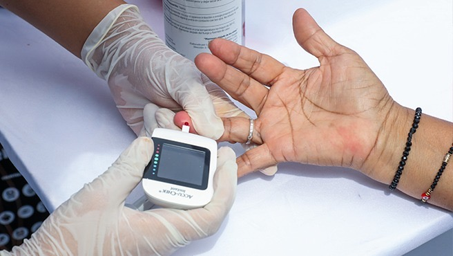

La diabetes se puede prevenir o controlar con hábitos saludables y detección temprana. Conoce los síntomas de alerta, factores de riesgo y medidas prácticas recomendadas por el Minsa.

Fuente: Ministerio de Salud (Minsa).
La diabetes es una enfermedad crónica que puede afectar el corazón, los riñones, la vista y los pies si no se detecta y controla a tiempo. En el Perú, alrededor de 2,8 millones de personas viven con diabetes mellitus y millones más están en riesgo de desarrollarla, según estimaciones del Ministerio de Salud (Minsa). La buena noticia es que adoptar hábitos saludables y realizar controles preventivos puede marcar una gran diferencia.
Prevenir la diabetes tipo 2 y detectar a tiempo cualquier alteración en la glucosa son acciones al alcance de la mayoría de personas. No se trata de cambios drásticos, sino de decisiones cotidianas sostenidas: comer mejor, moverse más y hacerse chequeos periódicos.
La diabetes puede desarrollarse sin síntomas evidentes, pero hay señales que conviene no ignorar. El Minsa señala entre los principales síntomas de alerta:
Ante cualquiera de estas señales, lo más importante es acudir a un establecimiento de salud para una evaluación. Un diagnóstico temprano permite iniciar el tratamiento y evitar complicaciones.

Medir la glucosa y realizar controles periódicos ayuda a detectar la diabetes a tiempo.
El Minsa recomienda medidas sencillas que pueden incorporarse en la rutina diaria:
Si ya tienes diagnóstico de diabetes, el control no termina con la medicación. Es fundamental seguir las indicaciones del personal de salud, monitorear la glucosa según corresponda, cuidar la alimentación y mantenerse activo. El seguimiento continuo reduce el riesgo de complicaciones en el corazón, los riñones, los ojos y los pies.
La alimentación equilibrada y la actividad física son pilares para prevenir y controlar la diabetes.
Prevenir y detectar la diabetes a tiempo es una forma de cuidar tu salud y la de tu familia. Un chequeo oportuno y hábitos saludables pueden cambiar el rumbo de la enfermedad.